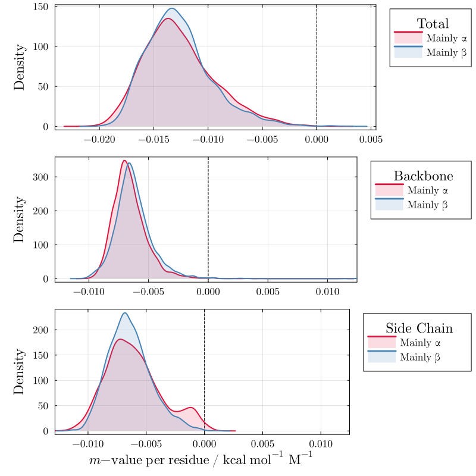
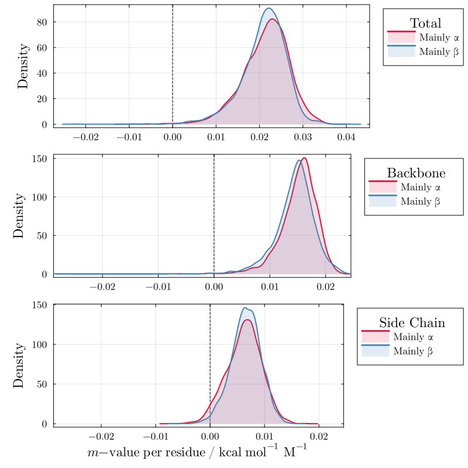
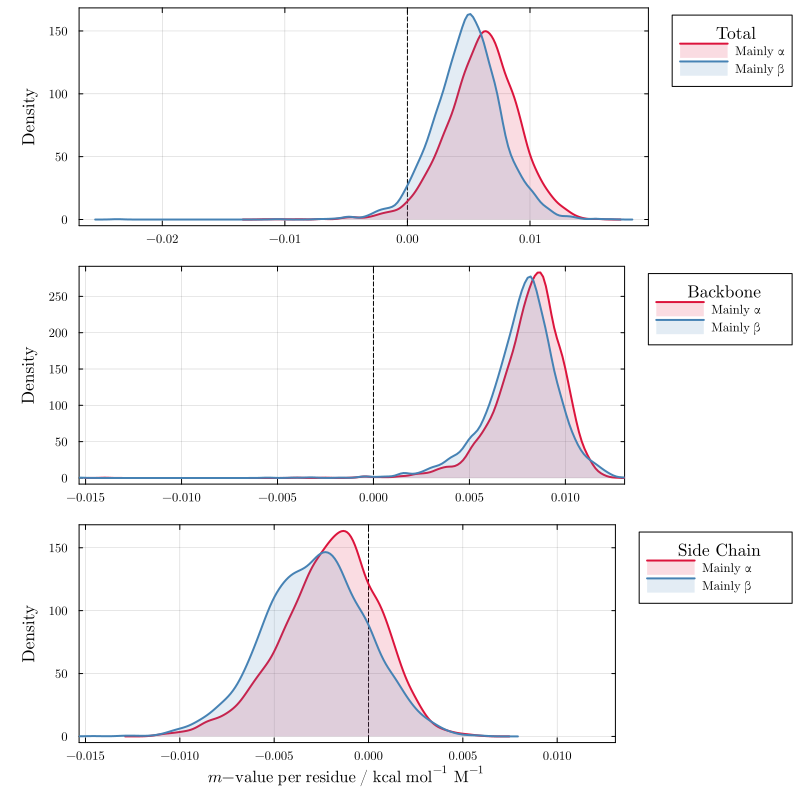
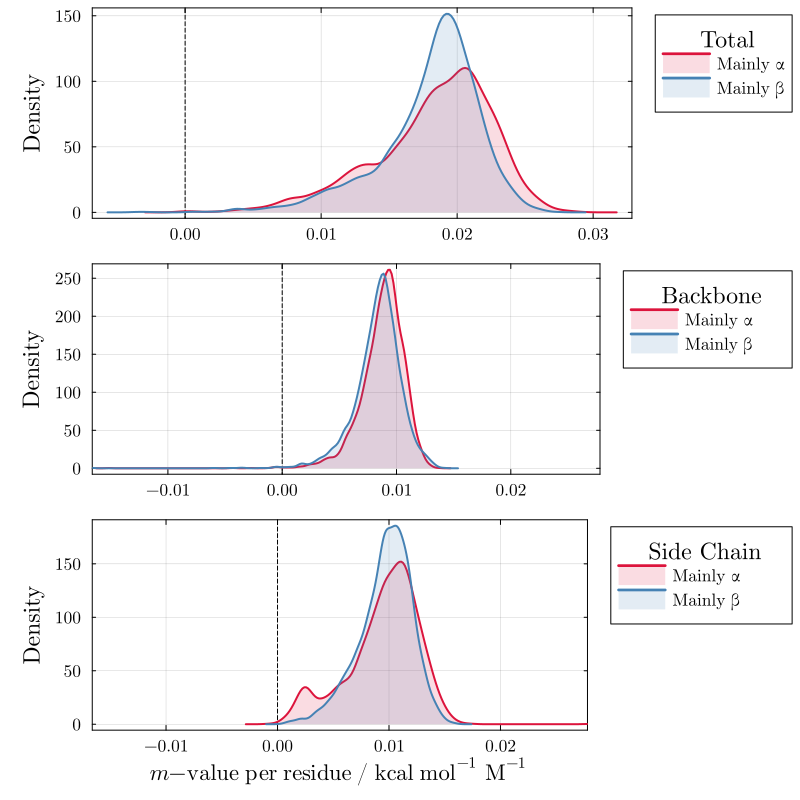
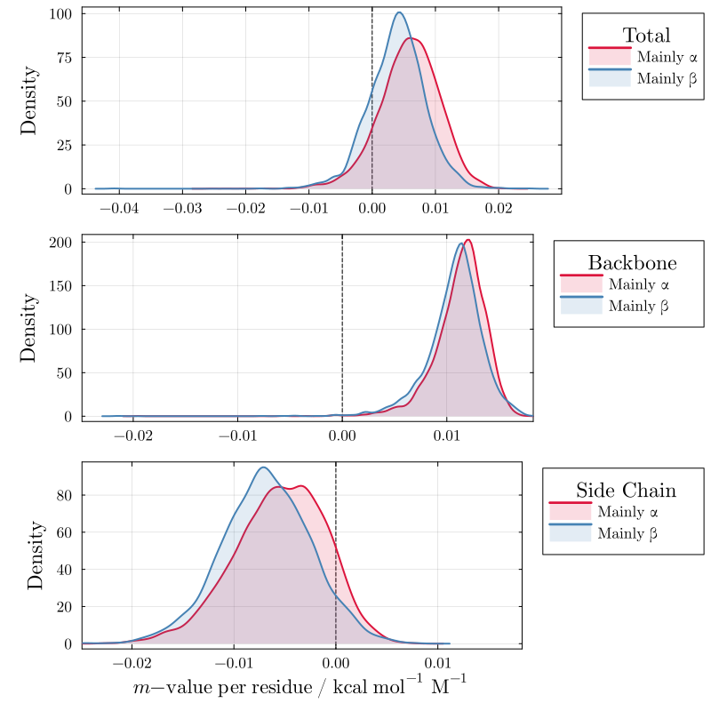
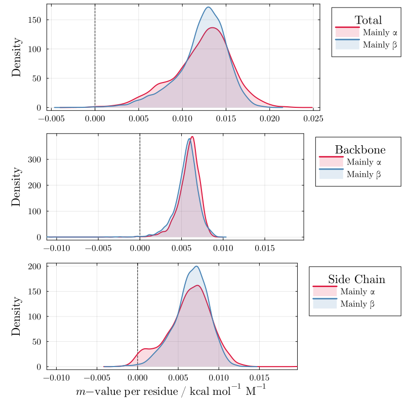
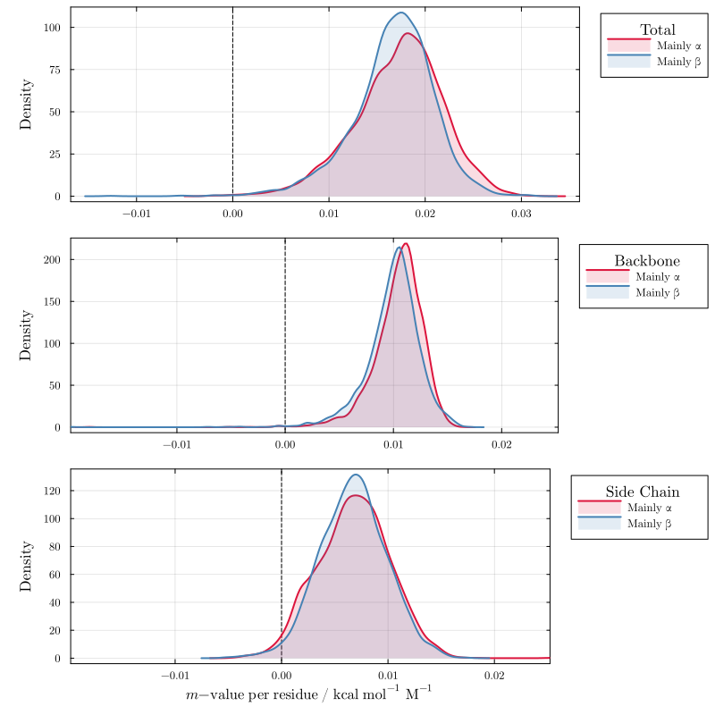
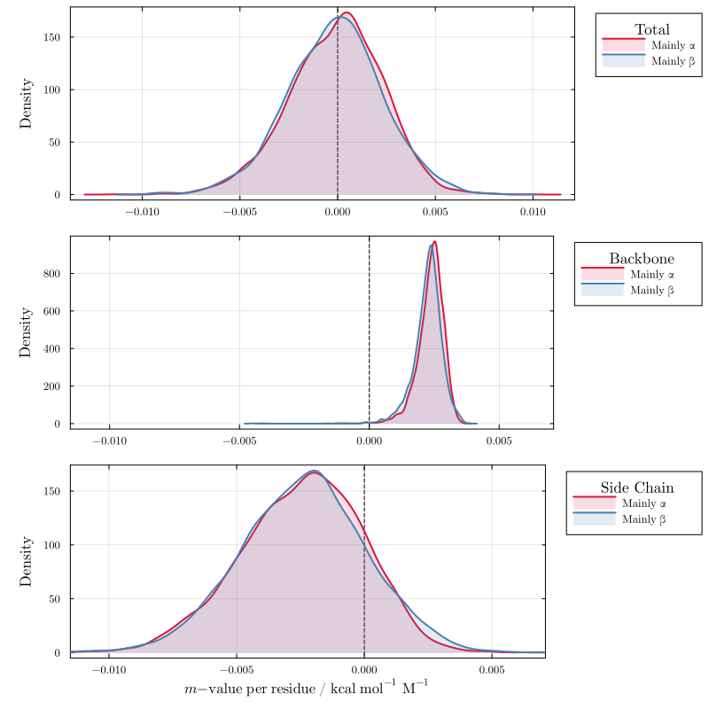
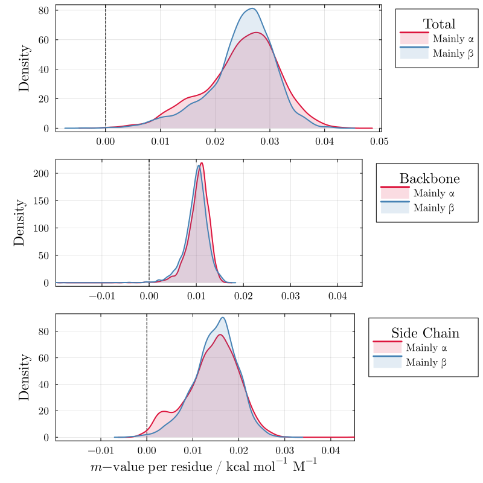

Relation to secondary structure
Using the MoeserHorinekApp model, these plots show the distribution of total, backbone, and side-chain m-value contributions per residue across the full set of non-homologous proteins from the CATH-S20 database (~15k domains), classified into mainly-α (3936 models) and mainly-β (3131 models) folds. The analysis reveals that urea interacts similarly with both fold classes, while proline shows an asymmetry in side-chain interactions that leads to stronger favorable interactions with β-folds than with helical structures. These results correspond to Figure 7 of the paper.
using LAPM
import DataFrames, CSV
df = CSV.read(cath_data_file, DataFrames.DataFrame);Urea — Figure S42
plot_cosolvent(df, "urea")
TMAO — Figure S43
plot_cosolvent(df, "tmao")
Proline — Figure S44
plot_cosolvent(df, "proline")
Sarcosine — Figure S45
plot_cosolvent(df, "sarcosine")
Betaine — Figure S46
plot_cosolvent(df, "betaine")
Sorbitol — Figure S47
plot_cosolvent(df, "sorbitol")
Sucrose — Figure S48
plot_cosolvent(df, "sucrose")
Glycerol — Figure S49
plot_cosolvent(df, "glycerol")
Trehalose — Figure S50
plot_cosolvent(df, "trehalose")